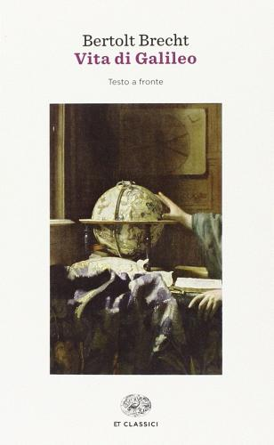
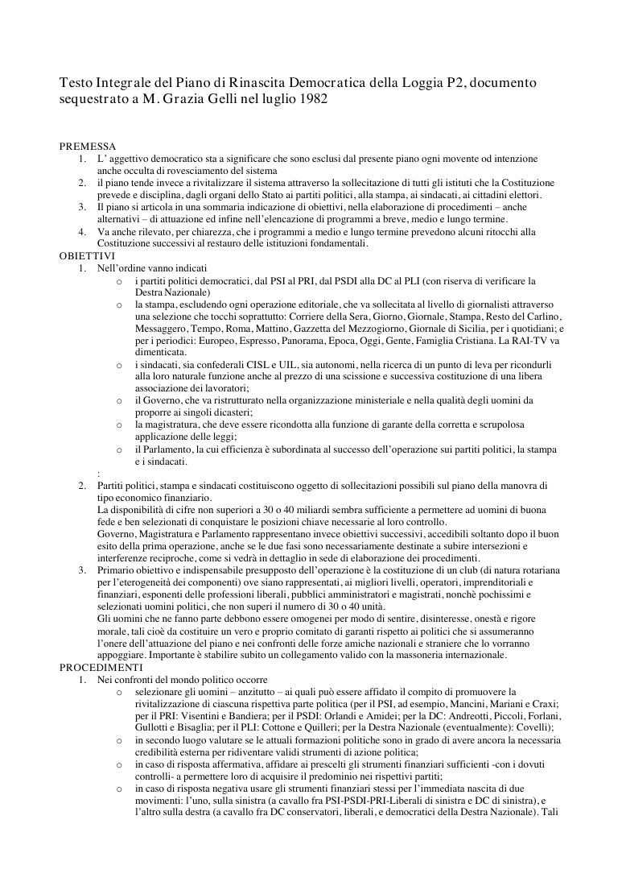

25:34 · 7 OPERE
Retrospettiva sul biennio trascorso.
Il filo del discorso
Dr Divago legge una bozza intitolata La fine di un inizio. Retrospettiva sul biennio trascorso, dedicata alla propria interpretazione politica del periodo 2020-2021. Le epigrafi attribuite a Chesterton e Brecht introducono il problema del rapporto fra evidenza, verità e comunicazione. Il testo propone una scansione per fasi: l’avvio dell’emergenza nel 2020, le restrizioni e i conflitti sociali del 2021, quindi una previsione per il 2022, formulata senza affermare di conoscerne tutti i dettagli.
Leggi la sintesi completaRiduci la sintesi
Nel discorso, il richiamo al Piano di rinascita democratica della P2 serve come analogia polemica sul potere; non è una prova di continuità organizzativa fra quel documento e la pandemia. La parte centrale contrappone la complessità della vita sociale a ciò che il relatore considera una tendenza al controllo e alla semplificazione. Seguono una critica dell’industria culturale, del giornalismo subordinato e della concentrazione dei mezzi di comunicazione. Il dissenso viene poi analizzato attraverso l’analogia con i gruppi chiusi, nei quali ogni obiezione può essere reinterpretata come conferma della posizione del gruppo. Il testo torna infine ai principi costituzionali, al rapporto fra maggioranza e minoranze e alla possibilità di discutere liberamente le decisioni pubbliche. I richiami a Eraclito e a Platone accompagnano la conclusione sulla difficoltà di uscire da rappresentazioni rassicuranti e di riconoscere la complessità. Le interpretazioni sui provvedimenti sanitari e sulle intenzioni dei governi rimangono attribuite all’autore; le previsioni non vengono riscritte come eventi successivamente dimostrati.
I libri nel discorso

Eretici
Identificazione probabile
Note sul riferimento
Copertina: Lindau · 2016 · traduzione Cristina Cavalli, prefazione Roberto Giovanni Timossi
Immagine autentica dell’opera, controllata visivamente; l’edizione di riferimento non è attribuita al filmato.
Chesterton e il 1905 sono annunciati; il passo corrisponde al capitolo XX di Heretics, non a Ortodossia. Titolo non pronunciato.

Vita di Galileo
Identificazione probabile
Note sul riferimento
Copertina: Einaudi · 2014 · testo tedesco a fronte, cura Giuseppina Oneto, traduzione Emilio Castellani
Immagine autentica dell’opera, controllata visivamente; l’edizione di riferimento non è attribuita al filmato.
Brecht è annunciato e il passo sulla verità corrisponde a Leben des Galilei, riscontrato dall’editore Suhrkamp; titolo non pronunciato.

Piano di rinascita democratica
Note sul riferimento
Prima pagina della riproduzione digitale del Piano: Archivio Antimafia · riproduzione digitale del documento, 8 pagine, senza data editoriale accertata
Prima pagina di una trascrizione digitale impaginata del documento P2, non copertina né facsimile dell’originale sequestrato. Il PDF contiene grassetti aggiunti dalla redazione e un errore nella testata: il sequestro avvenne il 4 luglio 1981, non nel luglio 1982. La pagina è conservata integra; la correzione è dichiarata qui e nelle note della scheda. Nessun ISBN o anno editoriale inventato.
Il titolo del documento e la loggia P2 sono espliciti; la data di sequestro del parlato richiede correzione.

Costituzione della Repubblica Italiana
Note sul riferimento
Copertina dell’edizione Intra aggiornata al 2023: Intra · 2023 · introduzione di Umberto Vincenti
Copertina autentica del testo integrale, aggiornata alla legge costituzionale 26 settembre 2023 n.1. È successiva al filmato del 2019 e non rappresenta la versione storica letta dal relatore. Umberto Vincenti firma l’introduzione.
Sono esplicitamente richiamati gli articoli 21 e 40 della Costituzione e, nella conclusione, i suoi principi.

Dialettica dell’illuminismo
Identificazione probabile
Note sul riferimento
Copertina: Einaudi, Piccola Biblioteca Einaudi, 2010
Edizione illustrativa dell'opera, con traduzione di Renato Solmi e introduzione di Carlo Galli; non identificata nel video.
La scuola di Francoforte, l’industria culturale e la formula iniziale sulla sventura suggeriscono l’opera; titolo non annunciato.

Frammenti
Identificazione probabile
Note sul riferimento
Copertina: BUR · a cura di Francesco Fronterotta, testo greco a fronte, 2013
Immagine autentica dell’opera, controllata visivamente; l’edizione di riferimento non è attribuita al filmato.
Eraclito, Efeso ed Ermodoro rimandano al frammento tradizionalmente numerato DK B121; una specifica edizione non è annunciata.

La Repubblica
Identificazione probabile
Note sul riferimento
Copertina: Laterza · La Repubblica · edizione con testo a fronte di riferimento
Immagine associata all’ISBN di riferimento e controllata visivamente; edizione e traduzione non identificate come quelle citate o lette nel video.
Trasimaco e il vantaggio del più forte rimandano al libro I; la caverna è richiamata alla fine. Titolo non annunciato.